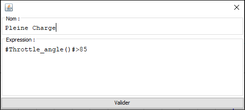
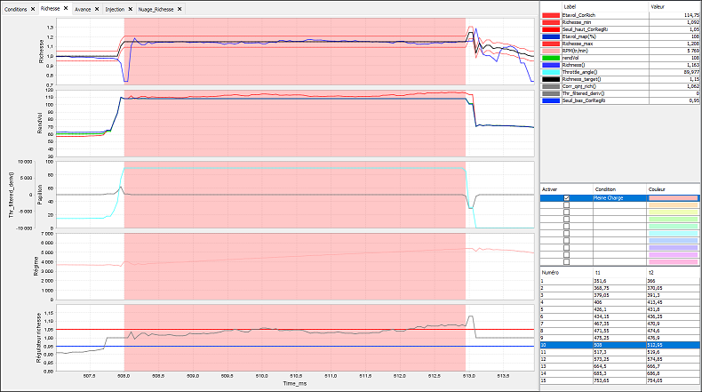

Les condtions permettent de mettre en évidence certains évènements du log définis par l'utilisateur.
Tout se déroule dans le tableau situé en bas à droite de l'application.
On retrouve trois colonnes :
Edition d'une condition :
A l'image des formules, il faut glisser les variables depuis la liste et utiliser les opérateurs relationnels.
En voici la liste :
| < | Inférieur |
| <= | Inférieur ou égale |
| > | Supérieur |
| => | Supérieur ou égale |
| == | Égale |
| != | Différent |
| && | Et |
| || | Ou |
Exemple d'une condition : On souhaite surveiller les zones où la position papillon est supérieure à 85%
En activant la condition, la liste des zones trouvées apparaitra en dessous. Lors de la sélection d'une zone, celle-ci s'affiche directement sur le graphique.
